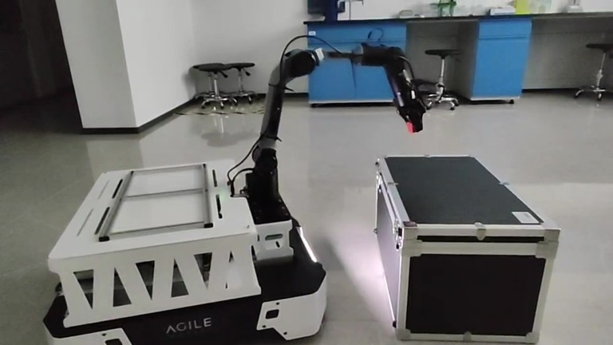
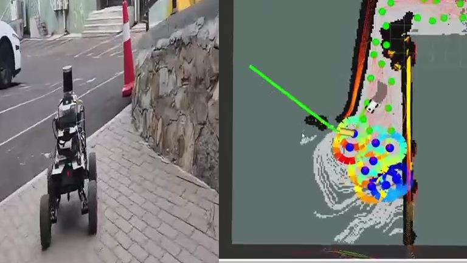
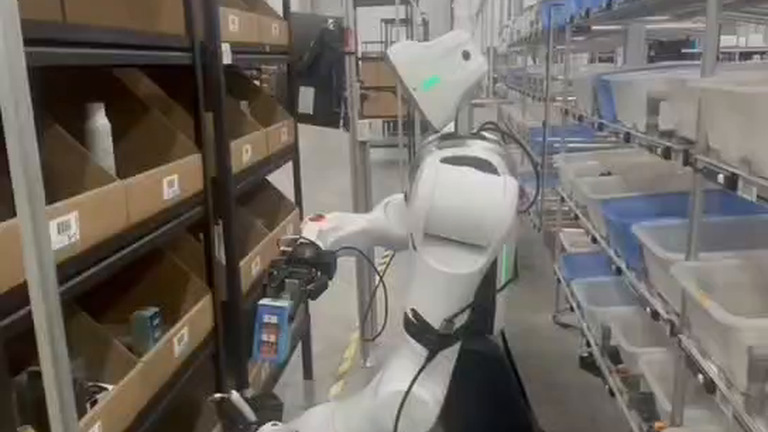
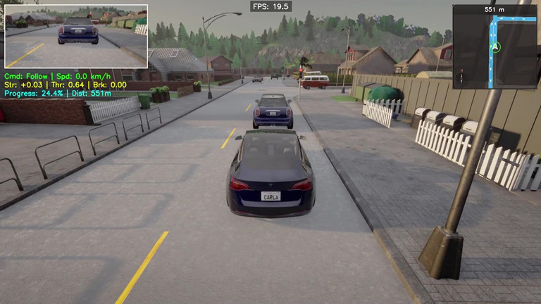
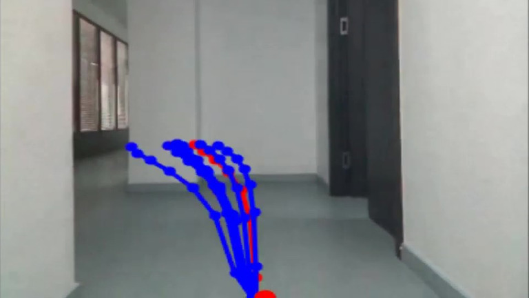
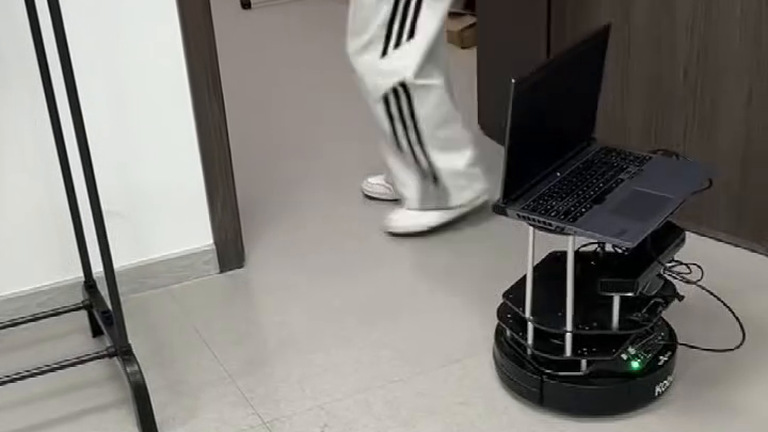
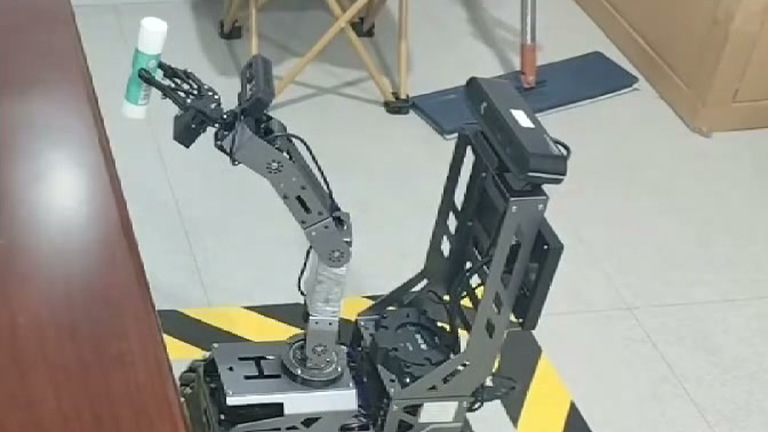
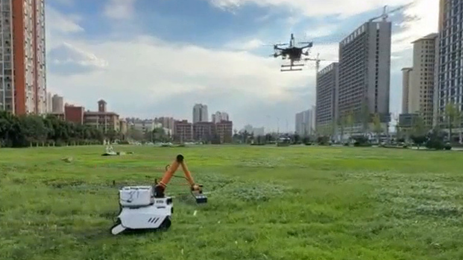

复合机器人导航抓取
移动操作
实机 0:15底盘导航至工作台并停稳，机械臂对准红色方块，将它夹起并抬离台面。
SLAM Toolbox / Nav2
实机 0:15底盘导航至工作台并停稳，机械臂对准红色方块，将它夹起并抬离台面。
SLAM Toolbox / Nav2
仿真与实机 0:31机器人按语言指令寻找 NASA 标志，遇阻后沿地图退回岔路。室外实机同步记录了车辆位置与地图更新。
地图记忆 / 前沿探索
实仓 0:24机器人沿货架通道抵达拣货位，从纸箱中夹起盒装商品，再转向对侧的蓝色料箱。
货架导航 / 商品抓取
仿真 0:13在 CARLA 中结合车道线、信号灯与前车信息行驶。车辆接近路口时跟随前车减速，直至停稳。
车道线 / 信号灯 / 前车
实机视角 0:14根据当前相机画面生成候选轨迹。进入走廊转角时，原本向前集中的轨迹随视野变化向左展开。
Transformer / 扩散模型
实机 0:10移动底盘跟随室内行人。行人改变方向、走向门边时，底盘根据检测到的位置随之转向。
行人检测 / 底盘控制
实机 0:21一次取物请求串起导航、识别、抓取与返回。机器人从茶几上夹起绿色瓶子，带回标记区。
任务调度 / 导航抓取
户外实机 0:05无人机飞过草地时，履带机器人在地面行驶。地面站汇集空地平台的画面与状态。
无人机 / 履带机器人